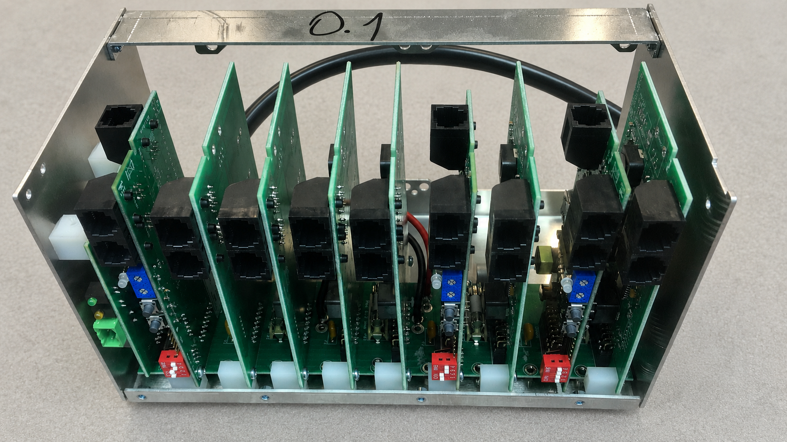
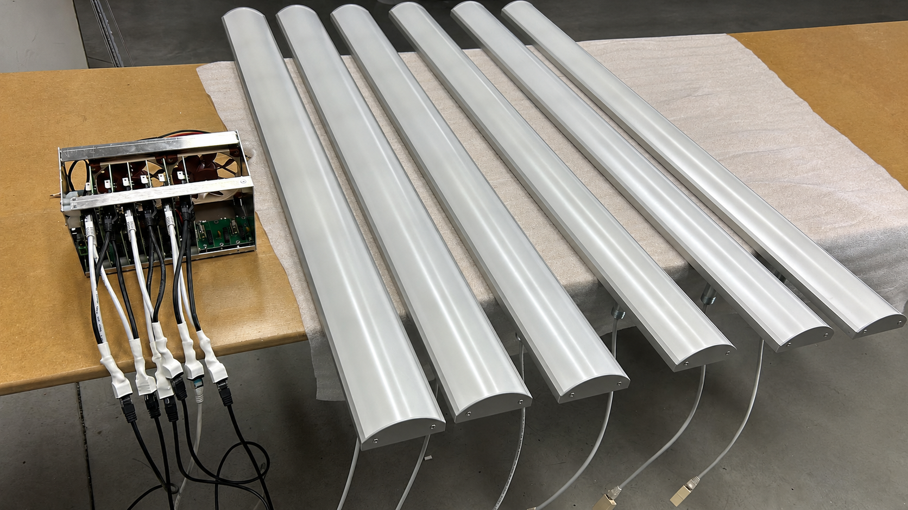
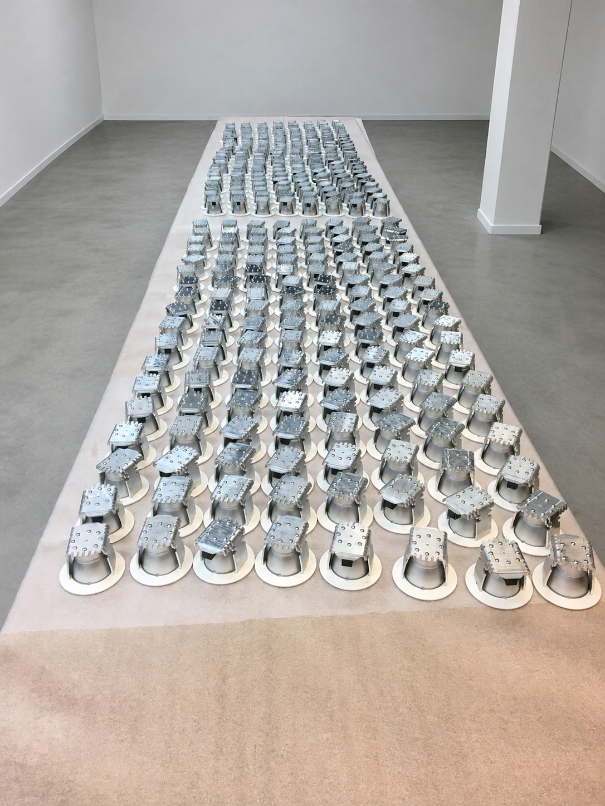

We dreigden een opdracht te verliezen door interne ondercapaciteit. Mistho nam snel verantwoordelijkheid en pakte ontwikkeling en opvolging gestructureerd over. Daardoor konden we het project toch doorzetten, zonder concessies aan kwaliteit of planning.
Van productierijp ontwerp tot complete realisatie.
Mistho realiseert technische producten en elektronica, met productie als vaste kern. We sluiten aan op de fase en scope van iedere opdracht: van productie en assemblage van een productierijp ontwerp tot volledige realisatie inclusief sourcing, industrialisatie, engineering, testen en kwaliteitsborging.
- ✓ Flexibele scope: van productie tot complete realisatie
- ✓ Leverbetrouwbaarheid binnen Europa
- ✓ Kostenoptimalisatie met geborgde kwaliteit
Snel contact
📞 +31 6 425 263 63
✉️ info@misthoprojects.com
Locatie: Oss, Nederland
Over Mistho
Eén Nederlands aanspreekpunt voor productie en technische projectrealisatie in Europa.
Wie we zijn
Mistho is uw Nederlandse aanspreekpunt voor de realisatie van technische producten en elektronica. Productie vormt onze kernactiviteit; afhankelijk van de opdracht organiseren we ook sourcing, industrialisatie, engineering, testen en kwaliteitsborging binnen één professioneel aangestuurde Europese keten.
Ons delivery team
We leveren via een vast delivery team: DPU voor productie en kwaliteit (Slowakije) en Badger voor engineering en industrialisatie (Ierland). Hierdoor blijft communicatie snel en worden faalkosten door misverstanden of onvolledige documentatie beperkt.
Scope
Van de productie van een bestaand ontwerp tot volledige projectrealisatie — afgestemd op uw opdracht.
Wat we doen
- Productie & assemblage
- Sourcing & supply chain
- Productontwikkeling & industrialisatie
- Hard- en softwareontwikkeling
- Testen & Quality Assurance
Ervaring in sectoren
- Mobiliteit: automotive, EV, e-mobility
- Industrieel: automatisering, machinebouw, robotics, mechatronica
- Energie: power distribution, HVAC, smart building
- Elektronica: IoT, vermogenselektronica, analoog & digitaal, verlichting
- Commercieel: consumer durables
Waar we mee helpen
Of uw ontwerp nu productierijp is of nog engineering en industrialisatie vraagt: we sluiten aan waar capaciteit, expertise of ketenregie nodig is.
- Capaciteit uitbreiden
- Leverbetrouwbaarheid borgen (EU delivery team)
- Kosten optimaliseren met kwaliteit op hoog niveau
Werkwijze
Een simpel model met duidelijke stappen, van intake tot uitlevering.
-
1
Start
We bespreken de potentiële opdracht en bepalen scope, doelen en gewenste planning.
-
2
NDA
We ondertekenen een NDA.
-
3
Intake
Randvoorwaarden boven tafel: engineering, teststrategie, risico’s, maakbaarheid, supply chain, traceability en logistiek.
-
4
Offerte
Heldere offerte en commerciële voorwaarden, inclusief planning en kwaliteitsafspraken.
-
5
Pilot (optioneel)
Proto’s of 0-serie, inclusief test- en kwaliteitsprotocollen: doorlopen, afgestemd en gekwalificeerd.
-
6
Serie-start & uitlevering
Serieproductie met geborgde QA. Verzending volgens afgesproken eisen en logistieke afspraken.
Productie en realisatie in beeld






Klantreviews
Wat klanten zeggen over samenwerking met Mistho.
Mistho werd op het laatste moment betrokken, toen snelheid cruciaal was. Door snel te schakelen en praktisch keuzes te maken, stond er binnen vijf dagen een werkende route richting productie. Dat heeft ons project gered.
Mistho gaf ons vooral rust in het proces. Eén aanspreekpunt, korte lijnen en snel inzicht in voortgang, risico’s en keuzes. Daardoor voelde het niet als uitbesteden op afstand, maar als een verlengstuk van ons eigen team.
Contact
Neem contact op over productiecapaciteit, een productierijp ontwerp of volledige projectrealisatie.
Gegevens
✉️ info@misthoprojects.com
📞 +31 6 425 263 63
Locatie: Oss, Nederland